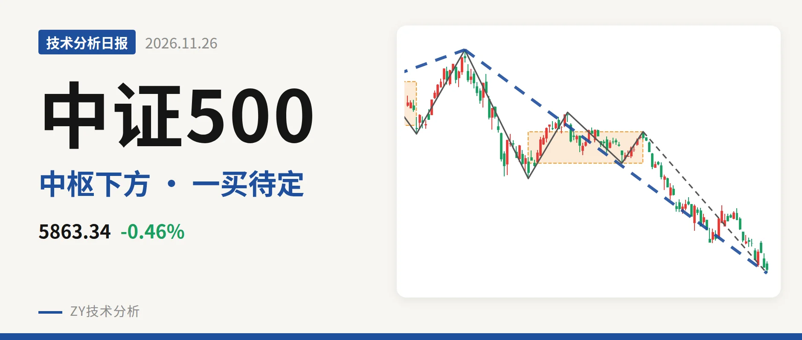
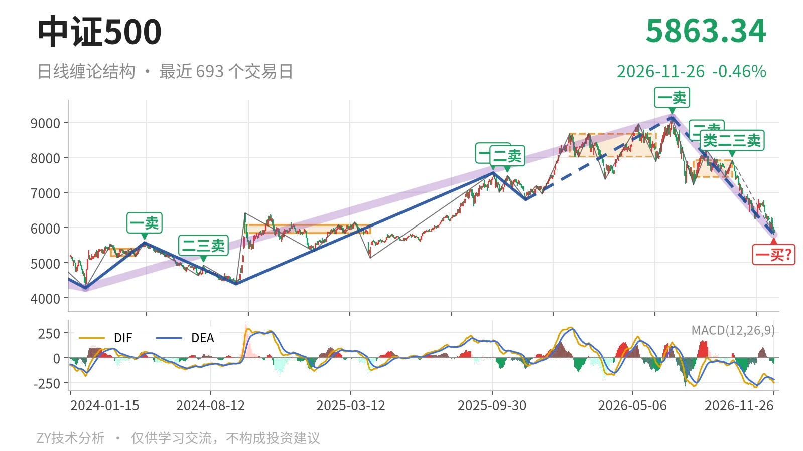
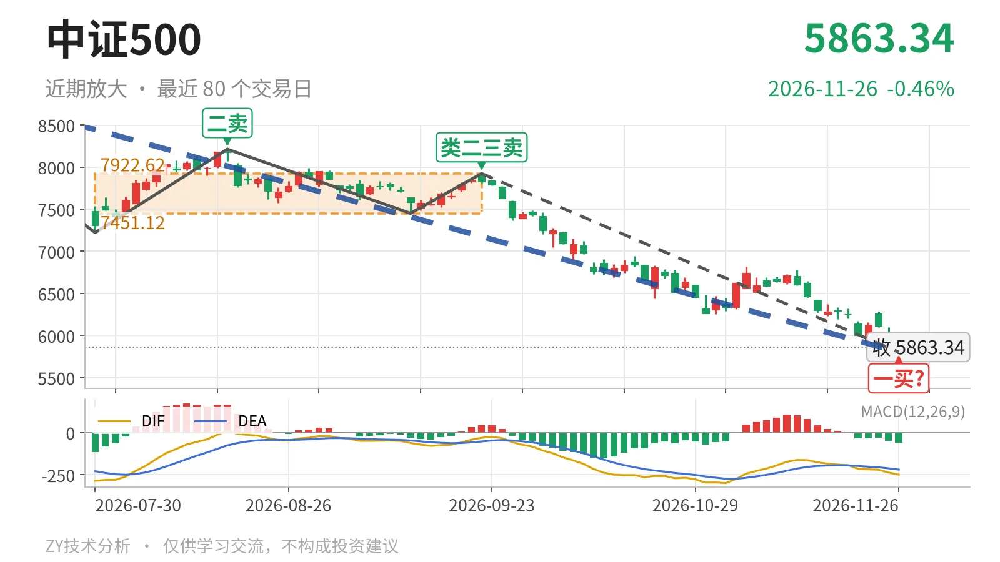

中证500｜中枢下破，5804点暂定一买

最近日线中枢 7451.12—7922.62点，收盘位于中枢之下
一句话：日线下跌段未结束，价在中枢下方，5804点暂定一买，背驰待确认
📉 走势结构：日线下跌段仍处下行
当前日线结构处在7月1日高点9147.56点以来的下跌段中，该段内含5笔，到11月26日低点5804.19点仍在延续，累计跌36.5%。更大级别上，2024年2月5日至2026年7月1日的上涨段在9147.56点见高点后转入回落，属于上涨段后的回落段，不是中枢震荡；2022年4月27日至2023年8月4日线段中枢5594.30—6263.16点对当前回落有承接意义。

🧭 中枢与位置：跌破最近中枢下沿
最新价已跌破最近日线笔中枢，处于中枢下方。最近的日线笔中枢是7月30日至9月22日的7451.12—7922.62点，11月26日收于5863.34点，低于下沿约21.3%，这个距离已不是中枢内回踩，而是离开中枢的下行。中枢结构从1月26日至6月8日的8014.66—8671.35点，下移至7月30日至9月22日的区间，中枢下移后再被跌破，下行力度没有收敛。更大级别上，当前价仍处于2022年4月27日至2023年8月4日线段中枢5594.30—6263.16点内部，但已低于中轴5929点附近，处于中枢内偏下半区。
🎯 买卖点：卖点逐级压低，暂定一买未定
日线笔级别上，7月1日一卖9147.56点、8月18日二卖8211.31点、9月22日类二三卖7922.62点，卖点一个比一个低，下跌段未被扭转，反弹笔的高点也在下移。11月26日出现的一买5804.19点，因为所在9月22日至11月26日下跌笔没有结束，只能作暂定的一买；若后续继续新低，这个一买会被后移，只对应更小级别。线段级别上，2025年11月24日三买6797.50点之后的上涨只走到9147.56点，当前已回到三买下方，尚未出现新的线段级别卖点，说明更大级别仍处在回落而非新上涨。

⚡ 背驰：DIF新低但绿柱暂未同步，不能确认
最关键的一组同向比较，是9月22日以来的下跌笔与7月1日至7月30日下跌笔。前者DIF低点已到-298.6，低于后者的-285.2；但绿柱面积2038仍小于后者的2687。价格和DIF新低而绿柱未同步放大，属于“新低不新弱”的潜在底背驰。不过当前这一笔没有结束，绿柱面积仍可能继续增加，最新DIF为-248.8、仍在零轴下方，在笔被破坏前不能认定底背驰，只能作为观察信号。
🔎 关键位置观察：反抽看7451点，回不到则下行延续
结构上先看最近中枢下沿7451点附近：若后续反抽回不到7451点上方，则9月22日离开中枢的下行仍属三卖性质。若能重新站上7451点，当前下跌更可能只是中枢扩展，而非新下跌段。下方5804点附近是暂定一买，跌破则一买后移；更大级别中枢下沿5594点附近若失守，回落级别将进一步扩大。最新收盘5863.34点仍在该大中枢内部，但DIF在零轴下方、价格在日线中枢下方，日线结构未转强，下行没有结束，只是进入大级别承接区后需看反抽力度。
⚠️ 本文为基于公开行情数据的缠论技术结构记录，由程序自动计算并生成，仅供学习交流，不构成任何投资建议。市场有风险，投资需谨慎。